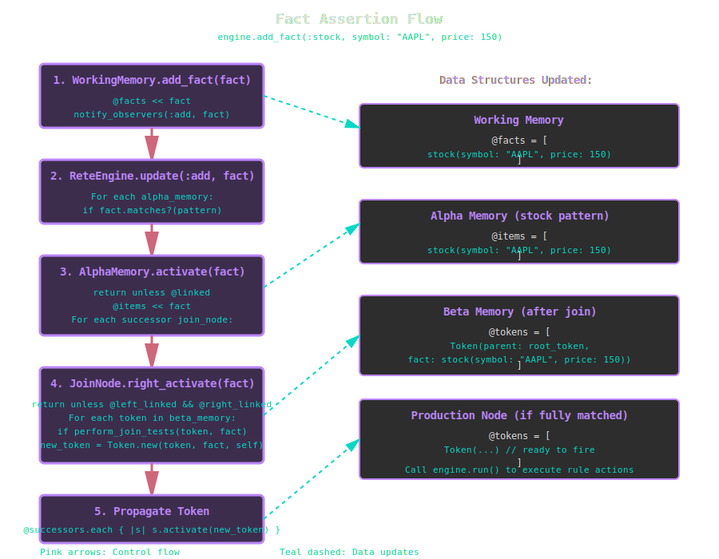

The RETE Algorithm in KBS¶
Overview¶
The RETE algorithm is a pattern matching algorithm for implementing production rule systems. Developed by Charles Forgy in 1979, RETE (Latin for "network") creates a discrimination network that efficiently matches rules against a working memory of facts. KBS implements the RETE algorithm with the critical unlinking optimization for improved performance.
Why RETE?¶
Traditional rule engines evaluate all rules against all facts on every cycle, resulting in O(R F) complexity where R is the number of rules and F is the number of facts. RETE achieves near-constant time per working memory change by:
- Sharing common patterns across rules in a compiled network
- Maintaining state between cycles (incremental matching)
- Processing only changes rather than re-evaluating everything
- Unlinking empty nodes to skip unnecessary computation (RETE optimization)
Core Concepts¶
Facts¶
Facts are the fundamental units of knowledge in the system. Each fact has:
- Type: A symbol identifying the kind of fact (e.g.,
:stock,:alert,:order) - Attributes: Key-value pairs containing the fact's data
- ID: A unique identifier (object_id for transient facts, UUID for persisted facts)
# Creating a fact
fact = engine.add_fact(:stock, symbol: "AAPL", price: 150.0, volume: 1000000)
# Fact structure
# => stock(symbol: AAPL, price: 150.0, volume: 1000000)
Implementation: lib/kbs/fact.rb:4
Working Memory¶
Working memory is the collection of all facts currently known to the system. It implements the Observer pattern to notify the RETE network when facts are added or removed.
class WorkingMemory
def add_fact(fact)
@facts << fact
notify_observers(:add, fact) # Triggers RETE propagation
end
def remove_fact(fact)
@facts.delete(fact)
notify_observers(:remove, fact) # Triggers retraction
end
end
Implementation: lib/kbs/working_memory.rb:4
Conditions and Patterns¶
A condition specifies a pattern that facts must match. Patterns can include:
- Type matching:
{ type: :stock } - Literal values:
{ symbol: "AAPL" } - Variable bindings:
{ price: :price? }(variables start with?) - Predicates:
{ price: ->(p) { p > 100 } } - Negation:
negated: true(match when pattern is absent)
# Match any stock with symbol "AAPL"
Condition.new(:stock, { symbol: "AAPL" })
# Match stock and bind price to ?price variable
Condition.new(:stock, { symbol: "AAPL", price: :price? })
# Match when there is NO alert for "AAPL"
Condition.new(:alert, { symbol: "AAPL" }, negated: true)
Implementation: lib/kbs/condition.rb:4
Rules¶
Rules are production rules consisting of:
- Conditions (IF part): Patterns to match in working memory
- Action (THEN part): Code to execute when all conditions match
- Priority: Optional integer for conflict resolution (higher fires first)
rule = Rule.new("high_price_alert") do |r|
r.conditions = [
Condition.new(:stock, { symbol: :symbol?, price: :price? }),
Condition.new(:threshold, { symbol: :symbol?, max: :max? })
]
r.action = lambda do |facts, bindings|
if bindings[:price?] > bindings[:max?]
puts "Alert: #{bindings[:symbol?]} at #{bindings[:price?]}"
end
end
end
Implementation: lib/kbs/rule.rb:4
Tokens¶
Tokens represent partial matches as they flow through the RETE network. A token is a linked list of facts that have matched conditions so far.
class Token
attr_accessor :parent, :fact, :node, :children
# Reconstruct the full chain of matched facts
def facts
facts = []
token = self
while token
facts.unshift(token.fact) if token.fact
token = token.parent
end
facts
end
end
Key insights:
- The root token has parent = nil, fact = nil and represents "no conditions matched yet"
- Each join creates a new token linking to its parent token plus a new fact
- Tokens form a tree structure via the children array, enabling efficient retraction
Implementation: lib/kbs/token.rb:4
Network Architecture¶
The RETE network is a directed acyclic graph (DAG) consisting of three layers:
The three-layer RETE network architecture showing alpha memories (pattern matching), beta network (join processing), and production nodes (rule firing).
Layer 1: Alpha Network¶
The alpha network performs intra-condition tests - matching individual facts against patterns. Each AlphaMemory node:
- Stores facts matching a specific pattern
- Is shared across all rules using the same pattern (network sharing)
- Propagates matches to successor join nodes
class AlphaMemory
attr_accessor :items, :successors, :pattern
def activate(fact)
return unless @linked
@items << fact
@successors.each { |s| s.right_activate(fact) }
end
end
Example: If three rules all match stock(symbol: "AAPL"), they share one AlphaMemory node for that pattern.
Implementation: lib/kbs/alpha_memory.rb:4
Layer 2: Beta Network¶
The beta network performs inter-condition tests - joining facts from different conditions. It consists of:
Join Nodes¶
JoinNode combines tokens from beta memory (left input) with facts from alpha memory (right input):
class JoinNode
def left_activate(token)
return unless @left_linked && @right_linked
@alpha_memory.items.each do |fact|
if perform_join_tests(token, fact)
new_token = Token.new(token, fact, self)
@successors.each { |s| s.activate(new_token) }
end
end
end
def right_activate(fact)
return unless @left_linked && @right_linked
@beta_memory.tokens.each do |token|
if perform_join_tests(token, fact)
new_token = Token.new(token, fact, self)
@successors.each { |s| s.activate(new_token) }
end
end
end
end
Join tests verify:
- Variable consistency (e.g., both conditions match same :symbol?)
- Cross-condition predicates (e.g., price1 > price2)
Implementation: lib/kbs/join_node.rb:4
Beta Memory¶
BetaMemory stores tokens (partial matches) and implements the unlinking optimization:
class BetaMemory
def add_token(token)
@tokens << token
unlink! if @tokens.empty? # Unlink when empty
relink! if @tokens.size == 1 # Relink when first token arrives
end
def remove_token(token)
@tokens.delete(token)
unlink! if @tokens.empty? # Unlink when last token removed
end
end
Implementation: lib/kbs/beta_memory.rb:4
Negation Nodes¶
NegationNode implements negated conditions (e.g., "when there is NO matching fact"):
class NegationNode
def left_activate(token)
matches = @alpha_memory.items.select { |fact| perform_join_tests(token, fact) }
if matches.empty?
# No inhibiting facts found - propagate the token
new_token = Token.new(token, nil, self)
@successors.each { |s| s.activate(new_token) }
else
# Found inhibiting facts - block propagation
@tokens_with_matches[token] = matches
end
end
def right_deactivate(fact)
# When an inhibiting fact is removed, check if we can now propagate
@beta_memory.tokens.each do |token|
if @tokens_with_matches[token].include?(fact)
@tokens_with_matches[token].delete(fact)
if @tokens_with_matches[token].empty?
new_token = Token.new(token, nil, self)
@successors.each { |s| s.activate(new_token) }
end
end
end
end
end
Key insight: Negation nodes propagate tokens with fact = nil since there's no actual fact to include.
Implementation: lib/kbs/negation_node.rb:4
Layer 3: Production Nodes¶
ProductionNode is the terminal node for each rule. When a token reaches a production node, all rule conditions have been satisfied:
class ProductionNode
def activate(token)
@tokens << token
# Don't fire immediately - wait for engine.run()
end
def fire_rule(token)
return if token.fired?
@rule.fire(token.facts)
token.mark_fired!
end
end
Why delay firing? Negation nodes may need to deactivate tokens after they're created but before they fire. The two-phase approach (collect tokens, then fire) ensures correctness.
Implementation: lib/kbs/production_node.rb:4
The RETE Cycle¶
1. Network Construction¶
When a rule is added via engine.add_rule(rule), the network is built:
def build_network_for_rule(rule)
current_beta = @root_beta_memory
rule.conditions.each_with_index do |condition, index|
# Create or reuse alpha memory
pattern = condition.pattern.merge(type: condition.type)
alpha_memory = get_or_create_alpha_memory(pattern)
# Build join tests for variable consistency
tests = build_join_tests(condition, index)
# Create join or negation node
if condition.negated
negation_node = NegationNode.new(alpha_memory, current_beta, tests)
new_beta = BetaMemory.new
negation_node.successors << new_beta
current_beta = new_beta
else
join_node = JoinNode.new(alpha_memory, current_beta, tests)
new_beta = BetaMemory.new
join_node.successors << new_beta
current_beta = new_beta
end
end
# Terminal production node
production_node = ProductionNode.new(rule)
current_beta.successors << production_node
@production_nodes[rule.name] = production_node
end
Implementation: lib/kbs/rete_engine.rb:58
2. Fact Assertion¶
When engine.add_fact(:stock, symbol: "AAPL", price: 150) is called:

Step-by-step flow showing how a fact propagates through the RETE network from working memory to production nodes.
3. Pattern Matching Flow¶
Let's trace a fact through the network for this rule:
# Rule: Alert when AAPL stock exists but no alert exists
rule = Rule.new("no_alert") do |r|
r.conditions = [
Condition.new(:stock, { symbol: "AAPL" }),
Condition.new(:alert, { symbol: "AAPL" }, negated: true)
]
r.action = ->(facts) { puts "No alert for AAPL!" }
end

Complete trace showing how negation works: adding a stock fact fires the rule, adding an alert inhibits it, and removing the alert reactivates the rule.
4. Rule Execution¶
The final phase is engine.run():
def run
@production_nodes.values.each do |node|
node.tokens.each do |token|
node.fire_rule(token)
end
end
end
Each production node fires its accumulated tokens. The fired? flag prevents duplicate firing.
Implementation: lib/kbs/rete_engine.rb:48
RETE Optimization: Unlinking¶
The Problem¶
In basic RETE, join nodes always process activations even when one input is empty:
If beta memory is empty, the join will produce zero results, wasting CPU cycles.
The Solution¶
RETE introduces dynamic unlinking: nodes automatically disconnect from the network when empty and reconnect when non-empty.
class BetaMemory
def add_token(token)
@tokens << token
relink! if @tokens.size == 1 # Reconnect when first token arrives
end
def remove_token(token)
@tokens.delete(token)
unlink! if @tokens.empty? # Disconnect when empty
end
def relink!
@linked = true
@successors.each { |s| s.left_relink! }
end
def unlink!
@linked = false
@successors.each { |s| s.left_unlink! }
end
end
Join node respects linking state:
class JoinNode
def left_activate(token)
return unless @left_linked && @right_linked # Skip if unlinked!
# ... perform join ...
end
def right_activate(fact)
return unless @left_linked && @right_linked # Skip if unlinked!
# ... perform join ...
end
end
Performance Impact¶
For rules with many conditions, unlinking can reduce RETE network activations by 90%+:
- Empty alpha memories don't trigger join operations
- Empty beta memories don't process fact assertions
- Network "lights up" only the relevant paths
This is especially critical for: - Negated conditions (often have empty alpha memories) - Rare patterns (e.g., "critical alert" facts) - Complex rules (many conditions = more opportunities for empty nodes)
Variable Binding¶
Variables (symbols starting with ?) enable cross-condition constraints and action parameterization:
Extraction During Network Build¶
class Condition
def extract_variables(pattern)
vars = {}
pattern.each do |key, value|
if value.is_a?(Symbol) && value.to_s.start_with?('?')
vars[value] = key # { :symbol? => :symbol, :price? => :price }
end
end
vars
end
end
Implementation: lib/kbs/condition.rb:16
Join Test Generation¶
Variables create join tests to ensure consistency:
# Rule with shared ?symbol variable
conditions = [
Condition.new(:stock, { symbol: :symbol?, price: :price? }),
Condition.new(:order, { symbol: :symbol?, quantity: 100 })
]
# Generates join test:
{
token_field_index: 0, # Check first fact in token (stock)
token_field: :symbol, # Get its :symbol attribute
fact_field: :symbol, # Compare with order's :symbol attribute
operation: :eq # Must be equal
}
Implementation: lib/kbs/join_node.rb:89
Action Binding¶
When a rule fires, bindings are extracted for the action:
def fire(facts)
bindings = extract_bindings(facts)
# bindings = { :symbol? => "AAPL", :price? => 150.0 }
@action.call(facts, bindings)
end
def extract_bindings(facts)
bindings = {}
@conditions.each_with_index do |condition, index|
next if condition.negated # Negated conditions have no fact
fact = facts[index]
condition.variable_bindings.each do |var, field|
bindings[var] = fact.attributes[field]
end
end
bindings
end
Implementation: lib/kbs/rule.rb:34
Advanced Topics¶
Conflict Resolution¶
When multiple rules are activated simultaneously, KBS uses priority (higher values fire first):
rule1 = Rule.new("urgent", priority: 10) { ... }
rule2 = Rule.new("normal", priority: 0) { ... }
# rule1 fires before rule2
For same-priority rules, firing order is deterministic but unspecified (depends on hash ordering).
Fact Retraction¶
Removing facts triggers recursive token deletion:
class JoinNode
def right_deactivate(fact)
tokens_to_remove = []
@beta_memory.tokens.each do |token|
# Find child tokens containing this fact
token.children.select { |child| child.fact == fact }.each do |child|
tokens_to_remove << child
@successors.each { |s| s.deactivate(child) } # Recursive!
end
end
tokens_to_remove.each { |token| token.parent.children.delete(token) }
end
end
This ensures truth maintenance: when a premise is removed, all derived conclusions are also removed.
Implementation: lib/kbs/join_node.rb:72
Network Sharing¶
Alpha memories are shared across rules using pattern as the hash key:
If 10 rules all match stock(symbol: "AAPL"), they share one AlphaMemory node, reducing:
- Memory usage (one fact store instead of 10)
- Computation (one pattern match instead of 10)
Implementation: lib/kbs/rete_engine.rb:104
Incremental Matching¶
RETE is incremental: after the initial network build, only changes are processed. Adding a fact activates a small subgraph, not the entire network.
Complexity: - Initial build: O(R F) where R = rules, F = facts - Per-fact addition: O(N) where N = activated nodes (typically << R F) - Per-fact removal: O(T) where T = tokens to remove
In practice, RETE can handle millions of facts with sub-millisecond updates.
Debugging RETE Networks¶
Visualizing Token Flow¶
Enable token tracing:
class Token
def to_s
"Token(#{facts.map(&:to_s).join(', ')})"
end
end
# In your rule action:
r.action = lambda do |facts, bindings|
puts "Fired with facts: #{facts.map(&:to_s).join(', ')}"
puts "Bindings: #{bindings.inspect}"
end
Inspecting Network State¶
Check what's in memories:
# Alpha memory contents
engine.alpha_memories.each do |pattern, memory|
puts "Pattern #{pattern}: #{memory.items.size} facts"
memory.items.each { |f| puts " - #{f}" }
end
# Beta memory contents (requires introspection)
def walk_beta_network(beta)
puts "Beta memory: #{beta.tokens.size} tokens"
beta.tokens.each { |t| puts " - #{t}" }
beta.successors.each do |node|
if node.is_a?(BetaMemory)
walk_beta_network(node)
end
end
end
Common Pitfalls¶
- Forgetting to call
engine.run(): Tokens accumulate but rules don't fire - Pattern mismatches:
{ type: :stock }vsCondition.new(:stock, {})- the latter doesn't filter by type! - Variable binding errors: Using
?symbol(string) instead of:symbol?(symbol) - Negation timing: Negated conditions only fire when facts are absent, not after they're removed (use
engine.run()to re-evaluate)
Performance Characteristics¶
Time Complexity¶
| Operation | Complexity | Notes |
|---|---|---|
| Add rule | O(C F) | C = conditions, F = existing facts |
| Add fact | O(N) | N = activated nodes (avg << total nodes) |
| Remove fact | O(T) | T = tokens containing fact |
| Run rules | O(M) | M = matched tokens in production nodes |
Space Complexity¶
| Structure | Space | Notes |
|---|---|---|
| Alpha memories | O(F P) | F = facts, P = unique patterns |
| Beta memories | O(T) | T = partial match tokens |
| Tokens | O(C M) | C = conditions, M = complete matches |
| Network nodes | O(R C) | R = rules, C = avg conditions per rule |
Optimization Strategies¶
- Pattern specificity: Put most selective conditions first to reduce beta memory size
- Negation placement: Place negated conditions last (they don't add facts to tokens)
- Shared patterns: Design rules to share common patterns
- Fact pruning: Remove obsolete facts to trigger unlinking
- Priority tuning: Use priority to fire expensive rules last
Comparison with Other Algorithms¶
Naive Match-All¶
# O(R F) on every cycle
def naive_fire_rules
rules.each do |rule|
facts.each do |fact|
if rule.matches?(fact)
rule.fire(fact)
end
end
end
end
Problem: Re-evaluates everything, no state preservation.
TREAT¶
TREAT eliminates alpha/beta network in favor of lazy evaluation: - Pros: Simpler implementation, lower memory - Cons: Slower for rules that fire frequently (no memoization)
RETE is better when rules fire often; TREAT is better for sparse firing.
Basic RETE vs RETE with Unlinking¶
Early RETE implementations lacked unlinking: - Without unlinking: All nodes always active, many wasted join operations - With unlinking: Nodes disconnect when empty, up to 10 faster
KBS implements RETE with unlinking optimization.
Implementation Files¶
| Component | File | Lines |
|---|---|---|
| Core engine | lib/kbs/rete_engine.rb |
~110 |
| Working memory | lib/kbs/working_memory.rb |
~35 |
| Facts | lib/kbs/fact.rb |
~45 |
| Tokens | lib/kbs/token.rb |
~40 |
| Alpha memory | lib/kbs/alpha_memory.rb |
~40 |
| Beta memory | lib/kbs/beta_memory.rb |
~60 |
| Join nodes | lib/kbs/join_node.rb |
~120 |
| Negation nodes | lib/kbs/negation_node.rb |
~90 |
| Production nodes | lib/kbs/production_node.rb |
~30 |
| Conditions | lib/kbs/condition.rb |
~30 |
| Rules | lib/kbs/rule.rb |
~50 |
Total: ~650 lines of core RETE implementation.
Further Reading¶
Academic Papers¶
- Forgy, C. (1982). "Rete: A Fast Algorithm for the Many Pattern/Many Object Pattern Match Problem". Artificial Intelligence, 19(1), 17-37.
- Forgy, C. (1989). "Rete: A Fast Match Algorithm". AI Expert, 4(1), 34-40.
Textbooks¶
- Giarratano, J., & Riley, G. (2004). Expert Systems: Principles and Programming (4th ed.). Course Technology.
- Russell, S., & Norvig, P. (2020). Artificial Intelligence: A Modern Approach (4th ed.). Pearson. (Chapter on Rule-Based Systems)
Online Resources¶
- RETE Algorithm Visualization - Jess documentation
- Production Systems - Wikipedia
- Rule-Based Expert Systems - University of Toronto
Next Steps¶
- DSL Guide: Learn how to write rules using KBS's Ruby DSL
- Blackboard Architecture: Understand persistent memory and multi-agent systems
- Examples: See RETE in action with stock trading and expert systems
- Performance Tuning: Optimize your rule-based system